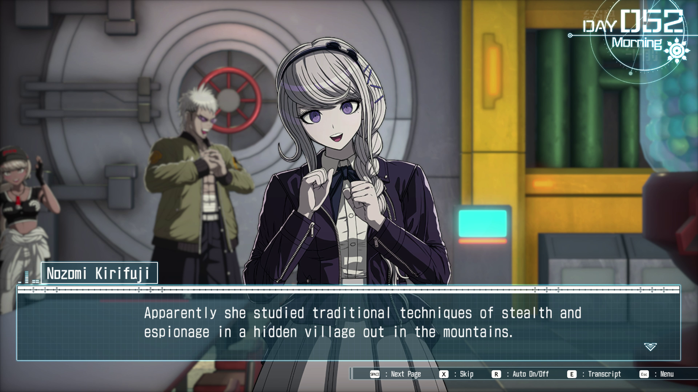
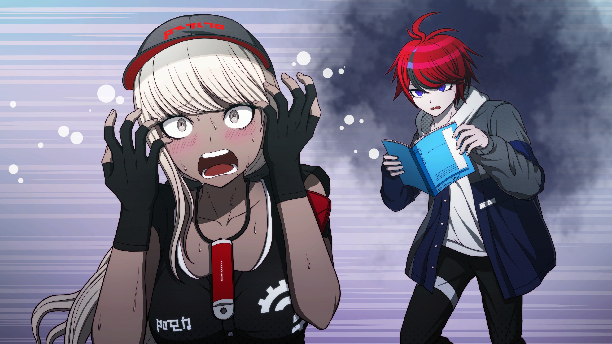
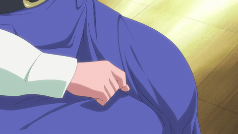
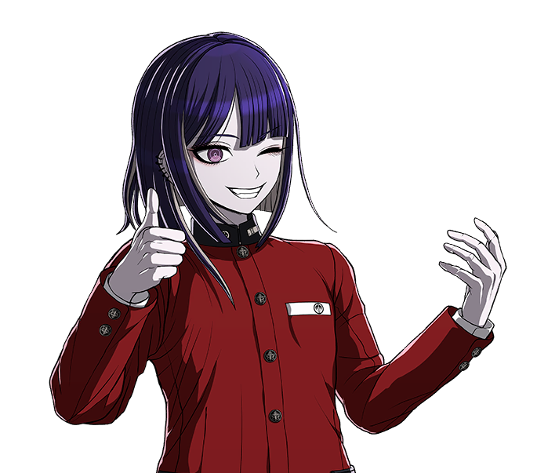
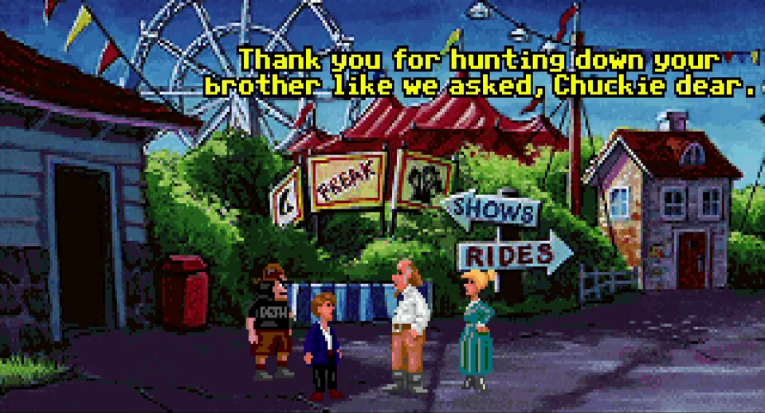

So. I'm actually writing this. I've been thinking about writing this for a while now, but I assumed it'd just remain a thought. I doubt I'll publish this, but in case I do, um... hi. You're in for whatever the opposite of a treat is. A taert? I don't know.
First thing you should know: I'm a horrible writer. I've always sucked at writing. I'll also likely be rambling on randomly and not stay on topic.
So. Anyway. What was I going to talk about? Oh, right, Hundred Line. I have some thorts™ about some of the branching nature of this game, and how the branches seem to have been written.
Okay, but why am I writing this? Alright, time to publicly embarrass myself. I'm mad that a character died. I should really know better than to expect something else from Kodaka at this point, but I keep falling for it. It'd be nice if it didn't trigger a depressive episode again, but what can you do.
(insert picture of Lucy holding the football for Charlie Brown here)
(unfortunately I couldn't find a good one)
Now I know what you're thinking. "You're just coming up with some points post-hoc to justify your anger. You wouldn't think that way if the opposite occurred."
Yup. Yep. Uh-huh. You're 100% correct, hypothetical reader. That is exactly what is happening here. That's right, it's time for...
Yup, I'm about to say a bunch of things that I wouldn't be saying otherwise if the game was written differently. And yes, I am basically complaining that the game wasn't written the way I wanted. But who knows, maybe I might come up with a point that's actually interesting.
Also note that I'll probably be updating this over time. I just wanted to post something asap, even if it isn't done.
Anyway, from here on out, spoilers for the general structure of Hundred Line and specific spoilers for certain routes and decisions. Also maybe some spoilers for Danganronpa 1/2/V3. And, uh... Monkey Island 2 and Thimbleweed Park.
Note that I have not played all branches (I only have 30 endings so far* (edit: up to 54ish now)), but I have looked at guides on how to get all possible endings, so I know the general structure.
In case you haven't played Hundred Line and just want to get the gist of it: you can look up the synopsis from any listing for the game. Basically, you have to defend this academy for 100 days, after which, something happens. You don't have any choices during these 100 days, so there's a set path. Except then you go back in time to try and do things over. This second run through there are A LOT of choices. Depending on the choices you take, there are 100 possible endings. But the thing is... those choices aren't always weighted equally. Sometimes this makes perfect sense; making a terrible choice can easily lead you to a quick ending. However, it becomes an issue when a more-or-less equal choice has incredibly lopsided outcomes. Like, let's say one option leads to 2 possible endings, while the other leads to 40 possible endings.
However, there is a reason why this is. There is one "main" route (ending 1), and the other routes essentially branch off from it. While this isn't necessarily a problem, it does mean that there are times when you can tell that the story was written expecting you to make a certain decision. This is especially galling when making the ""wrong"" choice leads to an obvious choice point, but then the game just makes the choice for you.
To be fair, I think part of this is part of the game's design philosophy: the writers didn't want there to be routes that are efffectively the same, just with one character swapped out for another. If they did this, it would feel like filler for getting to 100 endings. Alternatively, they could have made more than 100 endings, but just label the ones at the swap ending 1A/1B, etc...
So. Anyway. Kyoshika Magadori. My favourite character in the game. You've probably already figured out why I'm mad about this based on what I've written so far. On Day 15 of the main route, you have to choose from one of three Characters to sacrifice themself to detonate a bomb: Takemaru, Tsubasa, or Kyoshika.
Part of my issue with this choice is that the game isn't really interested in why you would choose one character over the other (at least as far as I've seen so far). For a lot of people playing the game for the first time, I imagine they'd just sacrifice whichever character they like less. But you could also view it as a value judgement:
Who would you sacrifice: Someone who's had a (relatively) normal and fulfilled life, or someone
who's lived almost completely isolated from society and hasn't had much of a childhood (hell, she
was so lonely she turned her sword into an imaginary friend with benefits). Now, obviously I'm putting
my thumb on the scale with those descriptions, but I still think they're somewhat applicable.
What's annoying is that the game doesn't seem to acknowledge this; if you choose to sacrifice
Takemaru, his only reasoning for being picked over Kyoshika is that she's a girl. While this is
very much in line with Takemaru's personality and thought processes, it's also kind of insulting
to Kyoshika. Honestly, it probably would have been better if Takemaru wasn't an option to sacrifice;
it would make more sense for Kyoshika to be the "canonical" choice. (It doesn't help that the only
route you can get from sacrificing Takemaru is the Sex Cult route, which is kinda insulting).
Like, you choose not to sacrifice Kyoshika because you want her to value herself and make genuine friendships, and instead you get the route where everyone loses their minds and can't think of anything other than boning Takumi. I fucking hate it (i.e. I hate that this series of choices leads to this route; I have... mixed feelings on the route itself). I also hate that they clearly could have put a branch to another route here (by rejecting Yugamu's sex pills), but they didn't. I guess they needed more endings for the (checks list) "Conspiracy" route and the "Box of Blessings" route.
(write about how you find Kyoshika's speeches more depressing than heroic.) I will. later.
Okay, back to the point about the game not really being interested in the reasonings for one's choice.
In the V'ehxness route, Tsubasa (and the game, by extension, I think? I'd have to play the whole route
over again) doesn't consider the possibility that the reason Takumi/the Player chose her was that they
believed she wouldn't be able to go through with it, as a roundabout way of avoiding sacrificing anyone.
I decided after a bit that this point isn't very good.
I guess you could also make the choice kind of a metatextual one? Like, do you prioritize narrative tightness or thematic coherence. I don't know; I've always been terrible at this stuff.
It's kind of odd to not have her in the route for ending 1, considering that that route (apparently) focuses on the Flaming Boy (Shion). In the routes I've played so far, the two don't have much interaction, despite their similar backgrounds, being raised isolated from anyone else.
Also Kyoshika's sacrifice scene is pretty much a copy of Tenko's death from V3 and Peko's death from 2. Basically, a character with low self-worth dies/sacrifices herself and isn't appreciated by the other characters until after/just before her death. They're the kind of characters that Kodaka loves killing for pathos, instead of seeing them handle their failures. (yes I'm still mad about Tenko's death 8 years later).
Okay, now the point I can't justify, even to myself. Honestly, my favourite Kyoshika moments
are the parts where she's suffering. ...okay, maybe that makes it sound a little worse than
I what I mean, but one of my favourite moments is when Kurara sacrifices herself to save
Kyoshika in the Zombie route. It's a great moment for both of them: Maskless Kurara overcomes
her timidity to save her girlfriend, while Kyoshika has to reckon with someone she
loves sacrificing herself to save her. I want more moments like that. I have my issues with the
zombie route, but that moment was worth it.
Hell, the weird sadist in me likes seeing my favourite characters survive, but suffer a lot along the way. Honestly, that's why I'm not too interested in some of the "everyone survives" endings. I'd love a alternate version of (at least some of) endings 1-40 where you save Kyoshika instead of Takemaru, but I know that's unreasonable. Now that I've watched what happens in ending 1, it would be roughly the same to have Kyoshika in place of Takemaru, but you could make it interesting if you had Kyoshika take the place of Takumi instead. It'd be a great inversion of what happens on day 15; instead of sacrificing herself to save everyone else, she'd have to sacrifice everyone else to carry out their will. If she survived it, she could start a family with Nozomi and Kamyuhn (or however you spell her name).
Well who knows. Maybe they'll release some DLC with more routes (they won't). Oh come on, I can dream (no you can't). I mean, that would be the smart way to ensure that not everything is spoiled immediately right? Not releasing the whole game at the start (you're being delusional). But surely it would be an easy way for them to make more money without having to make a whole new game (you're underestimating the amount of work it takes). (Update 2025-06): Well, there'll probably be DLC, but I doubt any of it will be alternative versions of current routes.
Alright, I finished some more routes and endings. Including the SF route and some other stuff. I got partway through the Killing Game route, up to around day 58ish. If you've played the route you can guess why. Being a Kyoshika stan is suffering.
Anyway, this route has another Kyoshika sacrifice (big surprise). But, uh... I do sort of notice a trend in how Kyoshika's sacrifices are treated vs. how the moments where others sacrifice themselves for her. Anytime someone else sacrifices themself for Kyoshika, it's a very sudden decision. This never leaves Kyoshika with enough time to talk through her emotions with the other person in question. On the other hand, whenever Kyoshika wants to sacrifice herself (except ending 75), she always explains that she's completely prepared to die for anyone. No one ever rebuts her desire to die by pointing out they're just as willing to die for her (even though both Takumi and Kurara are clearly willing to do so in other routes). Hell, no one expresses why they love her and want her to survive. She never gets the chance to process how others feel about her. Outside of the Romance Route, she never brings up that she's basically been alone her whole life and has no one left to return to on the satellite. It would be an interesting moment for her to bring that up as a reason why she should die, only for it to backfire completely on her.
It's especially odd not to bring this up in the Killing Game route, which touches on Darumi's willingness to die and fucked-up home life, as well as Nozomi's shitty relationship with her mother. It's especially poignant with Nozomi, considering a lot of her relationship with Eva in this route is about realising how much her mother used her without reciprocating her love.
You could easily do that in the route by having Takumi, Yugamu, or even Tsubasa forefeit their points so that Kyoshika would no longer be on the bottom of the leaderboard. If Takumi were to forefeit his points, the route could continue on from either Nozomi, Kyoshika, or Tsubasa's point of view. Also, Takumi could convince the Sponsor to let him forefeit his points by pointing out that it'd be the only chance for the sponsor to get his hemoanima.
If you wanted the routes to diverge more but don't want to do the "forefeit points" thing, you
could have Tsubasa intentionally fall to last place for Kyoshika's sake. It would make sense
from her development's point of view, since earlier in the route she laments not being
able to help Hiruko. It would also make the route diverge more, since they wouldn't be able
to repair the rocket or construct the baby jar; they'd have to find some other way to stop
the missile attack. e.g. maybe Kyoshika's hemoanima allows her to absorb Shion while
keeping his mind separate/intact. Also maybe have them ally with the Futurians to end
the Invader Hunt, since there's no rule about non-participants attacking the sponsor.
You could have Kyoshika offer some of her blood to one of the
commanders (probably Dahl'xia) to share her memories as proof of her intentions.
And then of course you could make another swordfucking joke.
Oh yeah, and also it would be a good time for a persuasion minigame for Kyoshika, since it would be (slightly) different to have one just about valuing yourself. The thing is, the correct answers couldn't be extrinsic things, e.g. "We need you because only you can...".
e.g. the correct answers would be things like:
"You're more than just what makes you useful."
"You don't need to suppress your emotions to make us feel better."
I mean c'mon. Are you really gonna tease us by having Kyoshika fantasize about putting Nozomi in bondage and not explore their relationship more? (yes they will. obviously) shut up i need this.
(Getting desperate) Maybe they wanted to write a split where you stary playing as Kyoshika, but they didn't have enough time to implement it.
yes I'm just adding new sections instead of going back and incorporating my points into previous sections. yes I'm lazy.
actually I forgot what I was going to write in this section, so never mind
oh right I think I was gonna write about how Kyoshika, despite appearing very emotionally open, actually hides a lot of her feelings so as not to make others feel bad.
Okay! going back here (2025-06-10) now that I've had more time to think about this after playing the Retsnom route. One rather inconsequential line stuck out to me
Now, while this would explain the "ninja" half of her title, it doesn't really fit in with her backstory as told in the romance route (though if you've played ending 001, there's a pretty obvious reason for that). It also doesn't fit in with her seemingly open personality and inability to hide anything. But that could be a... partially false impression which she uses to her advantage. It's pretty simple; to prevent people from thinking you have a secret, make them think you're bad at keeping secrets. There's also the fact that she becomes far more eloquent whenever she's about to die.
Which... also brings me to an interesting... theory? analysis? of her skill. Bushido is actually a relatively recent propaganda tool that relies on imagined views of the past to dehumanise soldiers (see Bushido or Bull? for more info on this). As Friday writes, "One of the basic tenets that modern writers associate with bushidó is that a true samurai was not only willing to risk his life when called upon to do so, but actually looked forward to the opportunity to sacrifice himself in the line of duty."
If you're familiar with Umberto Eco's essay Ur-Fascism (alternate link), this may remind you of Point 11, The Cult of Heroism where "[T]he Ur-Fascist hero craves heroic death, advertised as the best reward for a heroic life." Both* descriptions more-or-less apply to Kyoshika, who is constantly eager to die. Of course, using a distorted view of the past to enforce such societal norms is also an important facet of (ur-)fascism. And, uh... I really thought I'd have more to say here. Nope. Coming up empty.
(Insert joke about syncretism and Kyoshika's choice of attire here)
*Note that The description for The Cult of Heroism also mentions that the Ur-Fascist hero more often sends others to their death through their own eagerness to die; this is decidedly not an aspect of Kyoshika's personality.
Anyway? That brings me back to my original... sigh... "theory": Kyoshika's actual ability is propaganda. She doesn't use it much, since it's not actually a "power" at first. She only "uses" it to convince the other characters to sacrifice her. However, once she remembers that she overwrote her own memories to make her past feel more palatable to herself, she becomes aware of it as an actual power. As she absorbs more hemoanima, she gains the ability to overwrite other characters' memories. She wouldn't use this ability in the first run-through, other than offering to overwrite Darumi's trauma (who refuses). Then, in the, uh... third run of the game, in some routes, she completely overwrites everyone's memories of their objectives
(as if i wasn't doing that already)
(get ready for some of the worst fanfic writing you've ever seen)
okay maybe "write" is a bit of a generous term. a better phrase is probably "plot out".
Okay, so back to the killing game route. Let's say Tsubasa willingly sacrifices herself to save Kyoshika†. While I haven't played past this point in the route, it would make sense to give Kyoshika a route where she can actually get close to some of her friends (other than just Kurara and Takumi). Especially considering how her willingness to die mirrors Darumi's quite closely. Anyway, you could have her ally with some of the commanders to take down the sponsor. Kyoshika is able to successfully negotiate with due to her empathy and her (former?) outlook on being a "warrior". However, at one point, the twins try to attack the commanders to increase their score, but Kyoshika winds up fatally wounding them while trying to subdue them. She offers to absorb both of their hemoanima so that they can at least always be together in death.
Anyway, at some point she visits the oracle who gives the commanders their titles, and discovers that her hemoanima has the ability to sustain Shion (and also maybe the ability to "purify" the hemoanima of anyone she absorbs. so she wouldn't have the whole "double Eito" making her go insane thing*). After absorbing Shion to stop the missiles, she also defeats and absorbs V'ehxness. While now being the (likely) strongest being on the planet and having the respect of a large segment of the Futur(i)ans, she's asked to become the figurehead/leader of the Futurian cause.
(also i didn't realise this while I was writing this, but this would make Shion Kyoshika's Stand. She'd love that)
(edit: On second thought, the choice should be clear that she would become immortal before she makes it)
If she agrees, she goes... way further and says that she'll use the revive-o-matic to effectively live forever and protect the planet for eternity, reasoning that someone who has experience fending off one invasion (from humanity) is better suited to protect against any future invasions**. The others are saddened at her willingness to throw away her dream of having a (relatively) normal family and life, ironically going against what they were trying to persuade her against earlier in the route, just in the opposite direction. She offers her friends to absorb their hemoanima once they're about to die, so they can (metaphorically) live forever within her. Cut to 10,000 years later. She presides over a thriving planet, but for the most part, remains in the background. After being alive for so long, she has indeed become the greatest swordswoman in history, though not in the way she expected. She moves from place to place, settling down for a few years in each place, and runs a small Magadori-kyuu swordsmanship dojo wherever she lives. One day, while talking with Shion, he teases her about having bedded thousands of men and women over the years, which is overheard by some of her disciples. She admits she is immortal, and in order to get them to not tell, she agrees to tell stories about some of those people. One of the disciples asks if she can remember every one of the people she's bedded clearly, to which she pauses before tearfully saying yes. She says that she truly loved each and every one of them, and despite the sadness she feels at their deaths, she has absolutely no regrets about having loved and lost them. She then tells stories of the exploits of Takumi, Yugamu, Darumi, and Nozomi. However, she also mentions that she's only there thanks to the sacrifices of Moko, Kurara, and Tsubasa, and cries at the realisation that she only knew them for a few weeks. Despite this, she's able to continue on talking about the lives of her first friends/lovers.
Hmm... the more I think about that, it seems a bit too... positive? Maybe it would be better to attach a final scene where she just goes alone to a dark room and just... cries for a long time. That way, there would be more ambiguitiy over her actual feelings.
Oh wait, also, with her infinite lifespan, she takes up writing/drawing manga at some point and writes the stories of her friends. Also, I feel like she should adopt a separate name as a pseudo-deity; maybe something like 俠信和? idk what to use for the last kanji; could be 和, 家, 華, 敢, or something else.
**Also, with her ability to cleanse those with hemoanima consumed by hate, she feels compelled to take on this task in perpetuity as (she believes herself to be) the only one able to handle this task. But that's part of her entire issue; she feels compelled to do things if (she believes) she's the only person who can do it.
If she disagrees... uh... I haven't thought about this branch as much. I guess
she starts a normal life with an unorthodox family consisting of herself, Darumi,
Takumi, and Yugamu (and maybe Nozomi?). The others are all glad that she's
putting herself first for once in her life. and uh... I'll expand on this later.
Okay, it's later. She could reject the notion of godhood on the basis that she
doesn't want just one person to have such total power.
Something I thought of later: If Takumi sacrifices himself, he could easily justify
it by saying the whole killing game is his fault in the first place, and he's just
taking responsibility. He could give a little pep talk to each of Kyoshika, Tsubasa,
and Yugamu, telling them not to be so hard on themselves, etc...
Also, right before the scene change, one of them could ask him if he'll be okay, and
he can just reply: "Of course I'll be okay. I'm the Grim Reaper, after all."
okay that's probably pretty cringy/corny/hacky/basic/etc... (obligatory thing I had to write to slightly lower my own embarrassment at what I'm writing.)
*This is something I thought up while thinking of another possible route. It doesn't have much impact in this one.
†Basically, Kyoshika and Yugamu would go out during the day to go
hunting while Takumi and Tsubasa stay in the lounge watching the scoreboard.
After returning back after raising Kyoshika's ranking, Kyoshika decides to
stay with Tsubasa until it's time to take the poison. At first, Tsubasa tries
to put on a brave face, since she's worried Kyoshika will try to get back
in last place if she finds out how scared she is. However, Kyoshika senses
this and assures Tsubasa she will respect her decision. She urges Tsubasa
not to hide her feelings. Tsubasa starts crying as Kyoshika holds her in her
arms. She talks about how scared she is while crying into Kyoshika's chest.
Kyoshika starts crying too, and admits she was scared too, and that her
claims of wanting to be seen as making a heroic sacrifice were to mask her
fear and prevent the others from trying to dissuade her. The two embrace for
a long while and maybe kiss. After taking the poison, Kyoshika
continues holding Tsubasa to help handle the pain.
Okay, I know I've made jokes about how there wouldn't be DLC for this game, and then Kodaka just... said "I want as much DLC as possible." (remember to actually write something here later)
Anyway, remember that point I mentioned about having an alternate version of the 2nd Scenario, but with Kyoshika? IMO it would make sense for it to have Darumi, Kyoshika, and Kurara make it to the (almost) end, since they don't have a 6th bond event as result. There's some pretty obvious options; Kurara feels the relief of no longer having to represent the "Oosuzuki Family", Kyoshika learns/realises that her ethos/viewpoint of striking down "the wicked" is itself harmful and part of what allowed her to engage in atrocities (as opposed to just thinking that she had the wrong target). And for Darumi... uh... I haven't seen enough of her routes to know. Though, they would have to have someone else die in their place. e.g. Takemaru for Kyoshika, Shouma or Hiruko for Darumi, and... maybe Tsubasa/Shouma/Gaku for Kurara? For Darumi, I guess it would work for her to be revived, but at the cost of someone else's life/hemoanima (most likely Shouma or Hiruko). Maybe Yugamu could figure out a way to do this (possibly using a bit of Kyoshika's blood as a catalyst). Alternatively, have Darumi go with Takumi & co. to the Second Academy at the beginning of the route, so she's not back at the main Academy to be attacked. Instead, Hiruko would die in her place. (lol don't like Hiruko, eh?) no.
(oh god they're just writing more terrible fanfic plots)
Hush, you... I mean, Hush... me?
(also my headcanon is that Kyoshika's memories are real (more or less), but she was actually under surveillance by... uh... whoever was in charge of the project. If anyone's memories were actually real, it would make sense for it to be hers, since she was completely isolated from the outside world. However, since she was essentially being used as a hemoanima guinea pig, she twisted her memories into something more palatable. I talk about this more in the propaganda part)
Anyways, at the end Kyoshika ends up being the one to absorb everyone else's cryptoglobin and finish everything off, but somehow ends up surviving. I've had a couple ideas of what to do after this, one that would just be an ending, and another that would continue onto a whole other round of routes.
In the simpler version, Kyoshika is overcome with grief at having killed her only friends, and starts burning with eternal flames. Nozomi sees this and immediately goes and embraces her, despite the flames burning both of them. Kyoshika asks Nozomi to let go, but she refuses. Eventually, the flames stop burning, leaving Nozomi somewhat disfigured. Kyoshika feels guilty, but Nozomi smiles and tells her that it was a small price to pay to save Kyoshika. Kyoshika starts crying again, and Nozomi embraces her and tells her that she loves her.
You know, something about how our trauma can hurt those we love, but it's still worthwhile to reach out share in that trauma. Someone else can probably summarise this much better than I can.
The, uh, other possibility was that Kyoshika finds out she can go back in time to repeat the 100 days, but with her friends' absorbed hemoanima. She realises she could just go back in time repeatedly and absorb her friends' hemoanima each time. Then, she could possibly go back in time to stop humanity from ever reaching Futurus in the first place (or even stopping World Death). Nozomi is horrified at this plan and desperately begs for her to reconsider, discussing the possibility of raising a family together, all the things they could do together, and even the kinky things she wants do with Kyoshika. When she gets desperate, she tries to guilt Kyoshika by asking whether she's okay with leaving Nozomi alone and making her lose another friend.
If Kyoshika relents, Nozomi apologises for manipulating her, but says that she genuinely wants to start a family with her. We then see a montage of their lives together, while Kyoshika narrates that she still felt guilty about deciding not to go through with her plan, but she keeps up appearances to make Nozomi (and maybe Kamyuhn) happy. "As long as Nozomi's happy, that's enough for me".
If Kyoshika does decide to go through with the plan, Nozomi cries (more)
and tells Kyoshika that if she ever gives up on her plan, that timeline's Nozomi
would (likely) happily start a relationship with her. She then asks for one last
"night" together with Kyoshika, who obliges. You could call the ending
"The Last Temptation of Kyoshika". (you're only calling it that because the
only thing you know about the last temptation of christ is that he's tempted
with a vision of having a long life with a family)... yeah, pretty much.
The way you could get both/all three possibilities would be to have Takumi decide how to motivate Kyoshika in the final battle. If he says "You're the only one who can do this!", it leads to the pair of options where Kyoshika wants to go back in time, since it just feeds her unhealthy obsession with taking all the burden onto herself and not actually thinking about her own wants.
On the other hand if he says... something else (I haven't come up with a good possibility, other than maybe "You don't have to do this"), it would lead to the burning ending.
Another thing about the route is that, at the Day 15 choice point, the correct
choice would be to "choose" Kyoshika at first, but then after hearing her talk,
have Takumi remember what she said about being lonely and wanting friends, which
gives him the option to change his mind. After hearing Takumi's reasoning,
Takemaru would immediately agree to detonate the bomb, and then make Kyoshika
promise to make as many good memories with her friends as possible.
After this, Takumi would feel surprisingly good about his choice, but then
Shion would come to warn him not to feel too certain about his choices, in an
inversion of what he would usually say.
Update to this last point: as I've thought about it more, it would make sense for the route to split off earlier so that Darumi is still alive when you get to the day 15 choice. When you get there, Darumi, Takumi, Nozomi, Kyoshika, and Takemaru would still be alive. Kyoshika starts saying that she should be the one to die (as in the main route), and Takumi initially picks her. She starts going through her speech from the other time, but Darumi interrupts her partway through. Darumi realises that Kyoshika is just like her; neither of them particularly value their own lives, and they both suppress their own emotions to make others feel better about their deaths. The difference is in how they do it: Darumi pretends to be a weirdo whom no one will mourn, while Kyoshika propagandises about her death being meaningful so that the others will feel less bad about making/seeing her die.

They're actually both quite similar, aside from their taste in media overlapping more than you'd think. (write more stuff here later)
Eventually, Darumi would go to talk to Kyoshika about why she said what she said and why she was so adamant about not letting Kyoshika die. When Darumi heard Kyoshika saying things like "[Her] life is a small price to pay...", Darumi immediately rejected it (in her mind), not wanting someone else to feel the way she did. However, later on, she realised that, if she could feel that way about someone else, maybe she could feel better about herself. She then says that she wants to be with Kyoshika as she learns to like herself more, and also maybe help Kyoshika with her issues as well.
idk is that corny? cringe? toxic? hacky?
Also one more idea I had for this route was that, instead of Moko going back to 2nd-last defense academy to get the Holy Jumonji Sword's pajamas to mark Kyoshika's grave, Kurara would try to go back to get them to thank Kyoshika (and possibly to confess to her). However, after getting attacked, her tomato mask gets completely destroyed, and instead, she doesn't wear it for the rest of the route. Also I just want to see her cry hugging Kyoshika and asking her why she's so eager to die.
Oh yeah, and in case it wasn't clear, after finishing the "go back in time" ending, the game would unlock a new flowchart (i guess "the hundred line 3") where you play as Kyoshika instead of Takumi. And yes, the goal would be to kill your friends over and over. And once you kill your friends at least 108 times, it would unlock a new path where Kyoshika decides what to actually do with the power. But the thing is... I don't think it would work if Kyoshika becomes more cold-hearted over time. Each time she kills someone would have to hurt her just as much as any other time. Also, this would be a counterpoint to the SF route: instead of being a route where you save everyone but ignore their emotions, you would instead cherish every member of your team, even as you kill them (I guess... kinda like the ending to 2nd). Also, she could use her memory-altering abilities (see the propaganda point earlier) to her advantage.
Not all of the routes would have to involve killing/absorbing your friends; in some routes, Nozomi (or someone else) could convince you to put the plan on hold for the current 100 days. Another thing: you could convince Yugamu to monitor your cryptoglobin as you go through with the plan in one (or more) route(s).
Okay, since I've started writing this, I've had a couple more ideas for how it could work. For one (almost?) final ending, you would actually play through it as Takumi first. Except... you never fight any battles. Every so often, one of the members just... disappears, and all the members lose all memories of them. They wouldn't even show up as "dead" in the flowchart; their icon would be removed entirely. Gradually, everyone would disappear until it's just Kyoshika, Takumi, and maybe Nozomi and/or Darumi. Then, at one point, you just see Kyoshika on top of you (Takumi) as she apologizes and plunges her infuser into Takumi's chest.
Then, when you play as Kyoshika, you realise that she's been convincing everyone else to let her kill them, and granting their last wishes before they die. After she kills someone, she erases everyone else's memories of them so they don't panic about their friends dying. Except she doesn't erase Darumi's memories, since Kyoshika figured it would be the kind of plot that Darumi would love. I uh... haven't thought too much more about this after this point.
Also one idea for a route would be an Utena parody route. My ideas for the characters:
(so... this is just turning into a fanfic idea document at this point, right?)
...yes...
(also it's pretty clear you're a Kyoshika yume██shi at this point)
...yeah, I know.

Yes, I know who all this is making me sound like (just... with a different object(ugh) of affection). Anyway, this route could
happen after choosing Takemaru to sacrifice which would normally lead to the cult route, but have Takumi reject Yugamu's weird
sex pills. Afterwards, Kyoshika comes to Takumi and says that, as thanks/penitence for letting her live, she'll take over leading
the SDU, at least temporarily. Takumi agrees, and Kyoshika starts talking with all the members and helping them with their problems.
As she gets closer to the other members, her words of encouragement become more poetic and inadvertantly romantic, which causes
the other members to... well, not quite fall in love, but maybe uh... "catch some feelings"? Is that what the kids say? (boy you
can really tell you're in your thirties now, eh?) shut up. Also, at one point, she could write poetry for each of the other members
to give out as a reward for reaching a certain day milestone.
Also you could have scenes of her helping out her friends in... unintentionally arousing ways. For example, you could have her
assist Tsubasa with adjusting something vaguely yonic and make it a metaphor for fingering. "Worry not, Lady Tsubasa, my nimble
fingers have been honed for precision through countless hours of rigorous [insert action here]."
Also, one CG that would be funny would be Kyoshika lying in bed with her eyes wide open, with a very blank but slightly confused
expression, with Nozomi up against her holding her arm on one side, Tsubasa doing the same on her other side, Kurara on top of her
with her face on Kyoshika's chest but facing to the side, and Darumi curled up like a dog at the foot of the bed (everyone except
Kyoshika has their eyes closed). (assuming they can resurrect Darumi somehow).
Honestly, I'd love some endings that are just... completely unexplainable from a strictly narrative perspective.
You know, ones that are intentionally unsatisfying narratively, but make sense when viewed thematically. (but you're not even that good at analysing themes) ...yeah i know.

So far, the endings I have are (in order of getting them):
42 41 47 63 64 65 67 68 66 62 61 43 44 70 69 75 76 74 73 71 72 46 48 45 93 98 97 78 77 79 80 81 82 83 84 36 34 35 100 56 53 54 55 60 59 99 58 57 92 91 90 89 50 52 51 49
I probably forgot to write down a few of the short endings I got along the way.